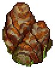
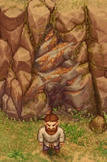
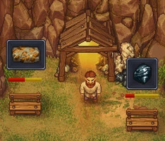
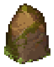
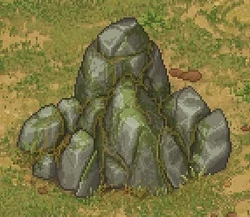
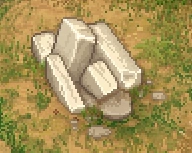
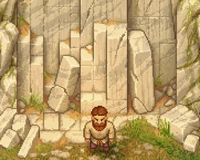
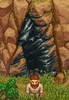
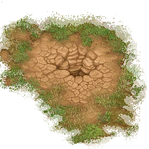
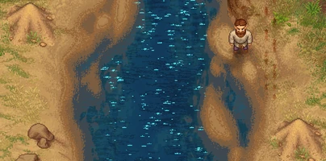

Mining
[[[:Template:Fullurl:]] {{{1}}}]
Graveyard keeper has many different types of resources but two of the most important for building are stone and metal. Mining will be how you acquire the raw materials necessary to produce them both. The earliest forms of mining the player can engage in is collecting bog iron from deposits and stone from various outcroppings. As you unlock more technologies though you'll get the ability to mine new types of ore and stone.
Iron Ore
Iron ore is necessary to forge iron ingots which are required to make all the metal resources in the game. From swords to nails. To mine it from any of its sources you will need a pickaxe. The quality of the pickaxe has a considerable impact on the amount of energy necessary and the speed at which you will mine, it has no effect on the amount of ore dropped.
Bog Ore

The earliest source of iron ore you can access is bog iron, which takes the form of outcroppings scattered around the map. Some of it can be found to the north of your home guarded by slimes but there are more deposits which can be found in the swamp after you've repaired the stone bridge to the west of the graveyard. Bog iron deposits will drop between three and six iron ore and once mined will not regenerate.
Iron Deposit

Iron deposits are where you will get large blocks of iron ore. At the north-most part of the cabin in the woods there is crag in the cliff face which has the texture of iron. Mining from there will get you large iron blocks which then should be carried back to the workyard if you want to process them into usable ore. Each of the blocks must be first stored in the iron ore stockpile then, afterward they will be available to be broken down into 5 iron ore each at the stone cutter.
Zombie Mine

The zombies there mine large blocks of iron ore and deposit them on the iron ore stockpile near the cabin in the woods. It's not possible to mine there manually. Read more here.
Stone
Stone is essential to making gravestones, a furnace, and many other work stations and improvements throughout the game. Stone comes in two forms: Outcroppings and deposits. Outcroppings are one-time only and do not respawn, but deposits are infinite.
Outcroppings

Stone outcroppings can be found very plentifully throughout the map and will require a pickaxe to break. Each stone outcropping drops between 1 and 3 pieces of stone and will not regenerate once harvested.
Stone Deposit

There are a few darkly colored section of stone along scattered across the world. By mining here after researching Stoneworking, you can gather large stone slabs. By putting these slabs into your stone stockpile, you can use the stone cutter to break them down into 6x pieces of stone each.
There are two of these deposits. When following the road west of your house up the hills and towards the apiary there is:
- One directly west of the apiary.
- One north-east of the apiary, past the cliffs and after clearing the landslide.
Stone Quarry

The stone quarry can be found left of the marble quarry, in the northern part of the western half of the forest. It's north of the cabin in the woods. It works in nearly the same way as stone deposits, with the exception, that you need 5×
wooden wedges to harvest the stone blocks. It can be automated by employing zombies.
Marble
Marble Deposit


Marble deposits, not to be confused with the marble quarry, are small permanent outcroppings, where singular marble blocks can be mined - similar to the larger stone deposits. There are two locations known, both found on Witch Hill, on either side of the ruin. Unlike the quarry, they don't require
wooden wedges to mine, though only produce one block (as opposed to two) and are a far greater distance away from the nearest stone stockpile - necessary for storage and use. Also, you can't employ zombies here.
Marble Quarry

The marble quarry is right of the stone quarry, in the northern part of the western half of the forest. It's north of the cabin in the woods.
In contrary of the stone quarry, this quarry has to be built first. For details refer to the marble quarry page.
It works in the same way as stone quarry and needs also 5×
wooden wedges to harvest the marble blocks. It can also be automated by employing zombies.
Coal
Coal Deposit

Coal will allow you to run your furnace much more efficiently than with firewood. Coal becomes accessible after you've researched the mining technology and removed at least one of the blockages in the cliffs to the forest.
East of the cabin in the woods, at the cliff north of the forest there is a vein of coal. Mining from here will give you between 20 and 30 coal which can then either be used for fuel in the furnace or kitchen oven, or later turned into graphite.
Zombie Mine
The zombies there mine pieces of coal and deposit them in the trunk near the cabin in the woods. It's not possible to mine there manually. Read more here.
Earthen Materials
Earthen materials such as river sand and clay become available to you after talking to the bishop and accepting his quest to craft 20×
ceramic bowls. During that interaction he unlocks The Concept of Dirt. All earthen materials are harvested with a shovel and higher quality shovels make a considerable difference in the amount of energy required to dig.
Clay

Once you've learned The Concept of Dirt from the bishop dry clay simply requires you to dig with a shovel in any of the clay deposits around the map. The nearest of these is immediately south of the graveyard.
Sand

Once you've learned The Concept of Dirt from the bishop, river sand can be harvested from any of the piles located around the map. The nearest of these is found in the northern part of the river west of your home. But other deposits can also be found to the far east along the beach.
Precious Metals and Related Ores
- The Precious Metals technology will give the the ability to find
silver nuggets and
gold nuggets. - The Related Ores technology will give you the ability to find
limestone,
pyrite, and
sulfur.
These ores are not deposits themselves but are instead found in the process of mining and processing other ores. Each time you mine
coal after acquiring the needed technology there is a small chance you will find between 1 and 5 limestone, pyrite, or sulfur.
Similarly each time you mine or break down a block of iron, you will have a chance to get between 1 and 3
silver nuggets or
gold nuggets in addition to the usual iron. In addition, there are some silver and gold veins on different levels of the dungeon, which can be mined there with a pickaxe and nuggets can also be obtained from fish.
Gems
Those are found as crystal protrusions in the dungeon from level 8 downward and one in the souls room.